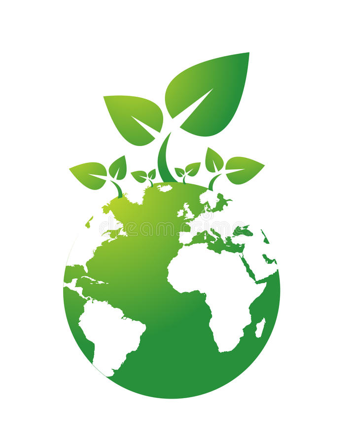
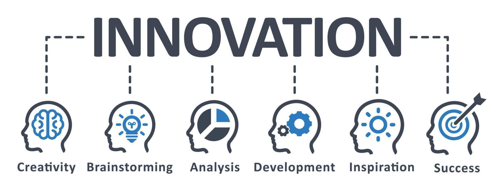
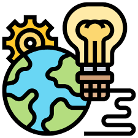

<!DOCTYPE html>
<html
lang="es"></html>>
<head>
    <meta charset="UTF-8">
    <meta http-equiv="X-UA-Compatible" content="IE=edge">
    <meta name="viewport" content="width=device-width, initial-scale=1.0">
    <title>Environmental technology</title>
    <link rel="shortcut icon" href="./images/icons8-globe-africa-16.png" type="image/x-icon">
    <link rel="stylesheet" href="./css/normalize.css">
    <link rel="stylesheet" href="./css/estilos.css">

</head>
<body>

    <header class="hero">
    <nav class="nav container">
        <div class="nav__logo">
            <h2 class="nav__title">environmental technology</h2>
        </div>

        <ul class="nav__link nav__link--menu">
            <li class="nav__items">
                <a href="#" class="nav__links">beginning</a>
            </li>
            <li class="nav__items">
                <a href="#" class="nav__links">complaint</a>
            </li>
            <li class="nav__items">
                <a href="#" class="nav__links">Contact</a>
            </li>
            <li class="nav__items">
                <a href="#" class="nav__links">Blog</a>
            </li>

            
        </ul>

        <div class="nav__menu">
            
        </div>
    </nav>

    <section class="hero__container container">
        <h1 class="hero__title">Environmental Technology.</h1>
        <p class="hero__paragraph">Some environmental technologies that maintain sustainable development are: recycling, water purification, wastewater treatment, biomass and biotechnology environmental improvements, nanotechnology gas treatment, solid waste management, and renewable energy; Some technologies help directly to the conservation of renewable energy from the earth, while others help the environment, reducing the amount of waste produced by human activities "the technology is emerging" and the hope of DISSEMINATION AND ACTION IS IN YOU. Technological processes have the ability to reduce the consumption of raw materials and energy that affect climate change, enabling the technological society to develop solution mechanisms.</p>
        <a href="#" class="cta">top news</a>
    </section>
</header>
<main>
        <section class="container about">
            <h2 class="subtitle">The objectives of clean technologies are based on four pillars:</h2>
            <p class="about__paragraph">Reduction of pollution in traditional industry (the destination of industrial waste).
                Technological-environmental renewal in industrial processes (the optimization of the production circuits themselves).
                Industrial globalization within the framework of sustainable development (the global spread of this technological culture).
                Reinsertion of production in its local ecological base (the return to a logic in which productive activities are thought of as integrated into a physical region).</p>

            <div class="about__main">
                <article class="about__icons">
                    
                    <h3 class="about__title">Related Posts</h3>
                    <p class="about__paragrah">AGA is committed to innovation and technology as key elements for urban water</p>
                </article>

                <article class="about__icons">
                    
                    <h3 class="about__title">ENVIRONMENTAL TECHNOLOGY BLOG</h3>
                    <p class="about__paragrah">https://procycla.es/blog/, PROCYCLA PARTICIPA DEL CONGRESO BIT 2022 (BIOECONOMÍA, INNOVACIÓN Y TECNOLOGÍA) EN LLEIDA</p>
                </article>

                <article class="about__icons">
                    
                    <h3 class="about__title">PROJECTS</h3>
                    <p class="about__paragrah">Computational simulation study in fluid dynamics (CFD) to determine models of agitation and heat transfer in anaerobic digestion processes</p>
                </article>
            </div>
        </section>

        <section class="knowledge">
            <div class="knowledge__container container">
                <div class="knowledege__texts">
                    <h2 class="subtitle">ISO 14001 Certificates (Environmental Management System)</h2>
                    <p class="knowledge__paragraph">ISO 14001 is a set of guidelines that can be applied to any company or organization on a voluntary basis. It entails establishing a declared environmental policy and implementing an Environmental Management System fulfilling a series of regulatory obligations. This can be accredited through ISO Certificates with international validity. This will allow you to demonstrate your ability to prevent and control the effects of your economic activity on the environment.</p>
                    <a href="#" class="cta">CONTACT WITH PROCYCLA</a>
                </div>

                <figure class="knowledge__video">
                    <video controls width="600" height="400">
                        <source type="video/webm" src="./video/Video Conciencia Ambiental.mp4" class="knowledge__video">
                    </video>
                </figure>
            </div>
        </section>

        <section class="price container">
            <h2 class="subtitle">innovations to achieve a sustainable world</h2>

            <div class="price__table">
                <div class="price__element">
                    <p class="price__name">Roofs and vertical gardens</p>
                    <h3 class="price__price">Drones</h3>

                    <div class="price__items">
                        <p class="price__features">Pollution collectors</p>
                        <p class="price__features">Smart Home Control</p>
                        <p class="price__features">Repurposed phones that detect illegal logging</p>
                    </div>

                    <a href="#" class="price__cta">innovation</a>
                </div>


                <div class="price__element price__element--best">
                    <p class="price__name">renewable energies</p>
                    <h3 class="price__price">Hydraulic or hydroelectric energy</h3>

                    <div class="price__items">
                        <p class="price__features">Biomass and biogas</p>
                        <p class="price__features">Bioethanol</p>
                        <p class="price__features">Solar energy</p>
                    </div>

                    <a href="#" class="price__cta">clean energies</a>
                </div>


                <div class="price__element">
                    <p class="price__name">to take care of the environment</p>
                    <h3 class="price__price">Toxic eating bacteria</h3>

                    <div class="price__items">
                        <p class="price__features">water in the desert</p>
                        <p class="price__features">A natural water purification system</p>
                        <p class="price__features">A sensor to control the water</p>
                    </div>

                    <a href="#" class="price__cta">solutions</a>
                </div>

            </div>
        </section>

</html>